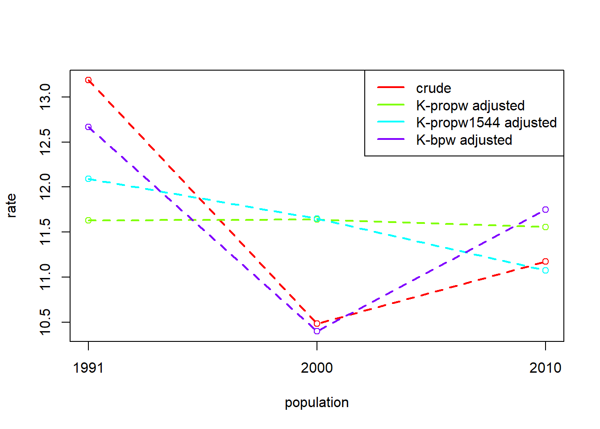
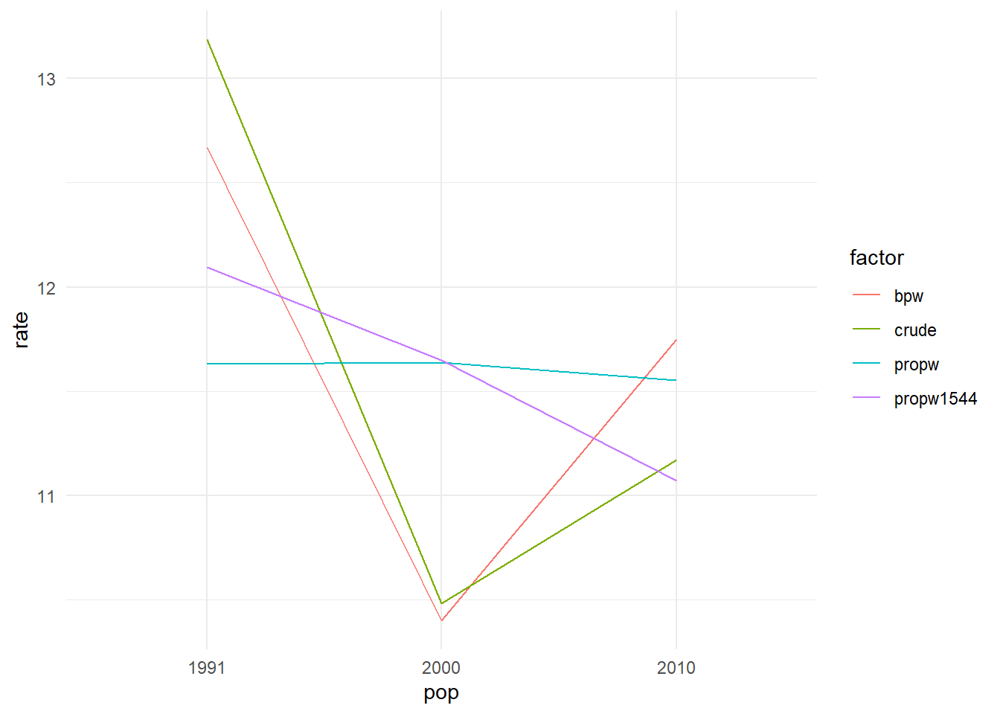

mydat <- tribble(
~pop, ~shape, ~nshp, ~ngrn, ~weight, ~rate,
1, "circle", 10, 2, 10/24, 2/10,
1, "square", 10, 3, 10/24, 3/10,
1, "triangle", 4, 3, 4/24, 3/4,
2, "circle", 7, 2, 7/24, 2/7,
2, "square", 7, 4, 7/24, 4/7,
2, "triangle", 10, 7, 10/24, 7/10,
)Crossclassified Data & Multiple Populations
Population sub-groups

population structure
mydat# A tibble: 6 × 6
pop shape nshp ngrn weight rate
<dbl> <chr> <dbl> <dbl> <dbl> <dbl>
1 1 circle 10 2 0.417 0.2
2 1 square 10 3 0.417 0.3
3 1 triangle 4 3 0.167 0.75
4 2 circle 7 2 0.292 0.286
5 2 square 7 4 0.292 0.571
6 2 triangle 10 7 0.417 0.7 

decomposition within each sub-group?
separate out data into each subgroup
do decomposition of weight * rate on each subgroup
sum it all up
\[ \small \begin{align} W\text{-effect} = \,\,&(W_{2\,\bigcirc} - W_{1\,\bigcirc})\left( \frac{R_{1\,\bigcirc}+R_{2\,\bigcirc}}{2} \right) \\ &+ \\ &(W_{2\,\triangle} - W_{1\,\triangle})\left( \frac{R_{1\,\triangle}+R_{2\,\triangle}}{2} \right) \\ &+ \\ &(W_{2\,\square} - W_{1\,\square})\left( \frac{R_{1\,\square}+R_{2\,\square}}{2} \right) \\ \end{align} \]
What a lot of effort!
decomposition on vectors
do the decomposition of weight * rate, but instead of a single number, these are vectors.
\[ W\text{-effect} = \,\, (\vec{W}_{2} - \vec{W}_{1})\left( \frac{\vec{R}_{1}+\vec{R}_{2}}{2} \right) \] \[ \vec{W} = \begin{bmatrix} W_{\bigcirc} \\ W_{\triangle} \\ W_{\square} \end{bmatrix}, \vec{R} = \begin{bmatrix} R_{\bigcirc} \\ R_{\triangle} \\ R_{\square} \end{bmatrix}, \]
decomposition on vectors
dgnpop(x = mydat,
pop = "pop",
factors=c("weight","rate"),
ratefunction = "sum(weight * rate)") |>
dg_table()
DG decomposition being conducted with R = sum(weight * rate) 1 2 diff decomp
weight 0.4036 0.5000 0.09643 46.29
rate 0.3958 0.5077 0.11190 53.71
crude 0.3333 0.5417 0.20833 100.00Note we need to specify the ratefunction.
When weights and rates are vectors, then weight * rate will return a vector, but we need it to return a summary value, e.g., sum(weight * rate)
alternatively (or equivalently):
dgnpop(x = mydat,
pop = "pop",
factors = c("rate"),
id_vars = "shape",
crossclassified = "nshp") |>
dg_table()
DG decomposition being conducted with R = rate 1 2 diff decomp
rate 0.3958 0.5077 0.11190 53.71
shape_struct 0.4036 0.5000 0.09643 46.29
crude 0.3333 0.5417 0.20833 100.00If we’re thinking about things in terms of population composition, then we can make use of:
id_vars: specify the variable(s) that define sub-groupscrossclassified: specify the variable that gives the sub-group size
With just one variable defining the sub-groups, this is (usually\(^*\)) just the same as the method on the slide previous
\(^*\)aside
population subgroup composition is a driver of the rate construction
dgnpop(x = data,
pop = "pop",
factors=c("weight","a","b","c"),
ratefunction = "sum(weight * a * b * c)") |>
dg_table()decomposition of population rate with weights as a composite factor
\[
\sum\limits_i w_i \,\,\cdot a_i \,\cdot\, b_i \,\cdot\, c_i
\]
population subgroups are ‘containers’ for the rate
dgnpop(x = data,
pop = "pop",
factors = c("a","b","c"),
id_vars = "subgroup",
crossclassified = "subgroup_size")within-subgroup decomposition of rates, and decomposition of population rate as sum of weights*rates. \[ \sum\limits_i w_i \,\,\cdot \underset{\uparrow \atop a_i \cdot b_i \cdot c_i}{r_i} \]
“cross-classified”
sub-groups defined by multiple variables
combinations of age, sex, race, area, etc.
expand_grid(pop=1:2,i = 1:2,j = 1:3) |>
mutate(
size = paste0("n_",i,j),
rate = paste0("r_",i,j)
) # A tibble: 12 × 5
pop i j size rate
<int> <int> <int> <chr> <chr>
1 1 1 1 n_11 r_11
2 1 1 2 n_12 r_12
3 1 1 3 n_13 r_13
4 1 2 1 n_21 r_21
5 1 2 2 n_22 r_22
6 1 2 3 n_23 r_23
7 2 1 1 n_11 r_11
8 2 1 2 n_12 r_12
9 2 1 3 n_13 r_13
10 2 2 1 n_21 r_21
11 2 2 2 n_22 r_22
12 2 2 3 n_23 r_23 expand_grid(pop=1:2,i = 1:2,j = 1:3,k=1:2) |>
mutate(
size = paste0("n_",i,j,k),
rate = paste0("r_",i,j,k)
)# A tibble: 24 × 6
pop i j k size rate
<int> <int> <int> <int> <chr> <chr>
1 1 1 1 1 n_111 r_111
2 1 1 1 2 n_112 r_112
3 1 1 2 1 n_121 r_121
4 1 1 2 2 n_122 r_122
5 1 1 3 1 n_131 r_131
6 1 1 3 2 n_132 r_132
7 1 2 1 1 n_211 r_211
8 1 2 1 2 n_212 r_212
9 1 2 2 1 n_221 r_221
10 1 2 2 2 n_222 r_222
# ℹ 14 more rowsexample:
Code
eg5.3 <- tibble(
pop = rep(c(1985, 1970), e = 22),
age = rep(rep(1:11, 2), 2),
race = rep(rep(1:2, e = 11), 2),
# number of people in age-race-group
size = c(
3041, 11577, 27450, 32711, 35480, 27411, 19555, 19795, 15254, 8022,
2472, 707, 2692, 6473, 6841, 6547, 4352, 3034, 2540, 1749, 804, 236,
2968, 11484, 34614, 30992, 21983, 20314, 20928, 16897, 11339, 5720,
1315, 535, 2162, 6120, 4781, 3096, 2718, 2363, 1767, 1149, 448, 117
),
# death rate in age-race-group
rate = c(
9.163, 0.462, 0.248, 0.929, 1.084, 1.810, 4.715, 12.187, 27.728, 64.068, 157.570,
17.208, 0.738, 0.328, 1.103, 2.045, 3.724, 8.052, 17.812, 34.128, 68.276, 125.161,
18.469, 0.751, 0.391, 1.146, 1.287, 2.672, 6.636, 15.691, 34.723, 79.763, 176.837,
36.993, 1.352,0.541, 2.040, 3.523, 6.746, 12.967, 24.471, 45.091, 74.902, 123.205
)
)
eg5.3# A tibble: 44 × 5
pop age race size rate
<dbl> <int> <int> <dbl> <dbl>
1 1985 1 1 3041 9.16
2 1985 2 1 11577 0.462
3 1985 3 1 27450 0.248
4 1985 4 1 32711 0.929
5 1985 5 1 35480 1.08
6 1985 6 1 27411 1.81
7 1985 7 1 19555 4.72
8 1985 8 1 19795 12.2
9 1985 9 1 15254 27.7
10 1985 10 1 8022 64.1
# ℹ 34 more rowscombined ij-mix contribution
Code
eg5.3a <- eg5.3 |>
group_by(pop) |>
mutate(
agerace = interaction(age,race),
agerace_w = size/sum(size),
) |> ungroup()
eg5.3a# A tibble: 44 × 7
pop age race size rate agerace agerace_w
<dbl> <int> <int> <dbl> <dbl> <fct> <dbl>
1 1985 1 1 3041 9.16 1.1 0.0127
2 1985 2 1 11577 0.462 2.1 0.0485
3 1985 3 1 27450 0.248 3.1 0.115
4 1985 4 1 32711 0.929 4.1 0.137
5 1985 5 1 35480 1.08 5.1 0.149
6 1985 6 1 27411 1.81 6.1 0.115
7 1985 7 1 19555 4.72 7.1 0.0819
8 1985 8 1 19795 12.2 8.1 0.0829
9 1985 9 1 15254 27.7 9.1 0.0639
10 1985 10 1 8022 64.1 10.1 0.0336
# ℹ 34 more rowsdgnpop(x = eg5.3a,
pop = "pop",
factors = c("agerace_w","rate"),
ratefunction = "sum(agerace_w * rate)") |>
dg_table()
DG decomposition being conducted with R = sum(agerace_w * rate) 1970 1985 diff decomp
agerace_w 8.373 9.914 1.5415 -224.6
rate 10.257 8.030 -2.2277 324.6
crude 9.422 8.736 -0.6862 100.0separate i and j contributions?
ignoring the ij interaction.. (Don’t do this!!)
Code
eg5.3b <-
eg5.3 |>
group_by(pop) |>
mutate(
popsize = sum(size)
) |>
group_by(pop, age) |>
mutate(
age_w = sum(size)/popsize
) |>
group_by(pop,race) |>
mutate(
race_w = sum(size)/popsize
) |>
ungroup() |> select(-popsize)
eg5.3b# A tibble: 44 × 7
pop age race size rate age_w race_w
<dbl> <int> <int> <dbl> <dbl> <dbl> <dbl>
1 1985 1 1 3041 9.16 0.0157 0.849
2 1985 2 1 11577 0.462 0.0598 0.849
3 1985 3 1 27450 0.248 0.142 0.849
4 1985 4 1 32711 0.929 0.166 0.849
5 1985 5 1 35480 1.08 0.176 0.849
6 1985 6 1 27411 1.81 0.133 0.849
7 1985 7 1 19555 4.72 0.0946 0.849
8 1985 8 1 19795 12.2 0.0936 0.849
9 1985 9 1 15254 27.7 0.0712 0.849
10 1985 10 1 8022 64.1 0.0370 0.849
# ℹ 34 more rowsdgnpop(x = eg5.3b,
pop = "pop",
factors = c("age_w","race_w","rate"),
ratefunction = "sum(age_w * race_w * rate)") |>
dg_table()
DG decomposition being conducted with R = sum(age_w * race_w * rate) 1970 1985 diff decomp
age_w 8.429 9.903 1.47442 -215.45
race_w 9.120 9.181 0.06135 -8.97
rate 10.279 8.059 -2.22012 324.42
crude 9.448 8.764 -0.68434 100.00separate i and j contributions
symetrically separating out ij interaction
eg5.3# A tibble: 44 × 5
pop age race size rate
<dbl> <int> <int> <dbl> <dbl>
1 1985 1 1 3041 9.16
2 1985 2 1 11577 0.462
3 1985 3 1 27450 0.248
4 1985 4 1 32711 0.929
5 1985 5 1 35480 1.08
6 1985 6 1 27411 1.81
7 1985 7 1 19555 4.72
8 1985 8 1 19795 12.2
9 1985 9 1 15254 27.7
10 1985 10 1 8022 64.1
# ℹ 34 more rowsdgnpop(x = eg5.3,
pop = "pop",
factors = c("rate"),
id_vars = c("age","race"),
crossclassified = "size") |>
dg_table()
DG decomposition being conducted with R = rate 1970 1985 diff decomp
age_struct 8.385 9.907 1.52173 -221.76
race_struct 9.136 9.156 0.01977 -2.88
rate 10.257 8.030 -2.22773 324.64
crude 9.422 8.736 -0.68622 100.00requirements
exhaustive stratification - sub-groups should cover 100% of the population of interest.
both populations must have same subgroups
no subgroups of size zero
More than two populations?
example
Code
scbrth <-
tribble(
~year, ~n_people, ~n_women, ~n_women1544, ~n_births,
1991, 5083330, 2638815, 1121555, 67024,
2000, 5062940, 2631014, 1079356, 53076,
2010, 5262200, 2713982, 1058324, 58791,
) |>
mutate(
crude = n_births/n_people*1e3,
propw = n_women/n_people,
propw1544 = n_women1544/n_women,
bpw = n_births/n_women1544*1e3
)
scbrth# A tibble: 3 × 9
year n_people n_women n_women1544 n_births crude propw propw1544 bpw
<dbl> <dbl> <dbl> <dbl> <dbl> <dbl> <dbl> <dbl> <dbl>
1 1991 5083330 2638815 1121555 67024 13.2 0.519 0.425 59.8
2 2000 5062940 2631014 1079356 53076 10.5 0.520 0.410 49.2
3 2010 5262200 2713982 1058324 58791 11.2 0.516 0.390 55.6a problem..
if we just look at pairwise decompositions..
Code
dgnpop(scbrth[1:2,], pop="year",
factors=c("propw","propw1544","bpw")) |>
dg_table()
DG decomposition being conducted with R = propw*propw1544*bpw 1991 2000 diff decomp
propw 11.82 11.83 0.01251 -0.46
propw1544 12.02 11.61 -0.41808 15.47
bpw 12.96 10.67 -2.29626 84.99
crude 13.19 10.48 -2.70182 100.00Code
dgnpop(scbrth[2:3,], pop="year",
factors=c("propw","propw1544","bpw")) |>
dg_table()
DG decomposition being conducted with R = propw*propw1544*bpw 2000 2010 diff decomp
propw 10.88 10.80 -0.08189 -11.88
propw1544 11.12 10.57 -0.55001 -79.82
bpw 10.19 11.51 1.32099 191.70
crude 10.48 11.17 0.68909 100.00Code
dgnpop(scbrth[c(1,3),], pop="year",
factors=c("propw","propw1544","bpw")) |>
dg_table()
DG decomposition being conducted with R = propw*propw1544*bpw 1991 2010 diff decomp
propw 12.20 12.12 -0.07901 3.93
propw1544 12.68 11.63 -1.04627 51.98
bpw 12.60 11.71 -0.88746 44.09
crude 13.19 11.17 -2.01273 100.00We have multiple sets of standardised rates.
And internally inconsistent decomposition effects.
What we want:
\[\small
\begin{align}
\text{BPW-effect}_{\text{1991v2010}} &= \text{BPW-effect}_{\text{1991v2000}} + \\ & \quad \,\,\,\,\text{BPW-effect}_{\text{2000v2010}}
\end{align}
\]
What we have:
\[\small
\begin{align}
-0.88746 &\neq -2.29626 + 1.32099 \\
-0.88746 &\neq -0.9753 \,\,!?!?\\
\end{align}
\]
a solution
Averaging over different possible ways to achieve consistency through substituting in standardised rates for one another.
e.g.,:

In DasGuptR
It does it all for us:
dgnpop(scbrth, pop="year",
factors=c("propw","propw1544","bpw")) |>
dg_table()
DG decomposition being conducted with R = propw*propw1544*bpw 1991 2000 2010
propw 11.63 11.64 11.55
propw1544 12.09 11.65 11.07
bpw 12.67 10.40 11.75
crude 13.19 10.48 11.17Note we don’t get the decomposition effects unless we specify which pair of populations.
These are now based on standardisation across the full set.
dgnpop(scbrth, pop="year",
factors=c("propw","propw1544","bpw")) |>
dg_table(1991, 2010)
DG decomposition being conducted with R = propw*propw1544*bpw 1991 2010 diff decomp
propw 11.63 11.55 -0.0758 3.77
propw1544 12.09 11.07 -1.0202 50.69
bpw 12.67 11.75 -0.9167 45.55
crude 13.19 11.17 -2.0127 100.00plots
dgnpop(scbrth, pop="year",
factors=c("propw","propw1544","bpw")) |>
dg_plot()
DG decomposition being conducted with R = propw*propw1544*bpw
dgnpop(scbrth, pop="year",
factors=c("propw","propw1544","bpw")) |>
ggplot(aes(x = pop, y = rate,
col = factor, group = factor))+
geom_line() +
theme_minimal()
DG decomposition being conducted with R = propw*propw1544*bpw